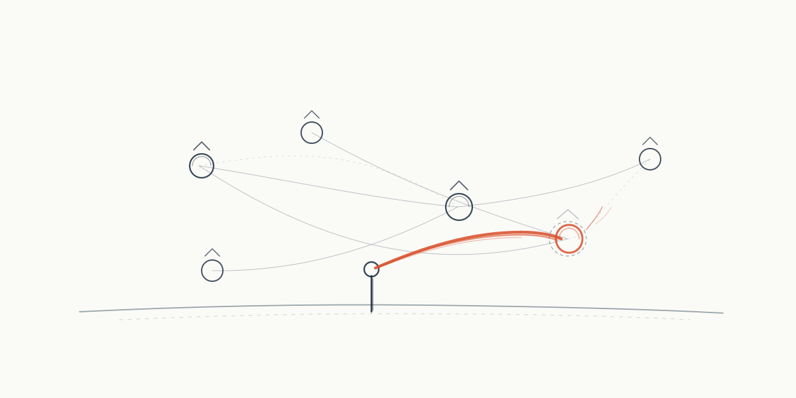

02Current · open
The instrument in use
Systems that let someone else mark their homework: an algorithm audited in Sierra Leone, a reading trial measured in Ras al-Khaimah — and the pieces still clearing the gate.

● This issue is open — pieces join as they clear the editorial gate. Published slowly, on purpose.
Issue 02 · June 2026 · paper ground · the thread
Read the current issue →